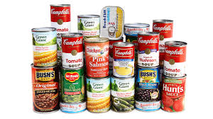

Food is a basic human need, and this organization is dedicated to providing it to those who need it most. We understand that many people around the world struggle to access nutritious meals, and we are committed to making a difference. Through our various programs, we aim to reduce hunger and enesure that everyone has access to the food they need. We provide Food Bank, Meal Programs, and Cooking classes to help individuals and families in need. Our goal is to create a community where no one goes hungry and everyone has the opportunity to thrive.

| Programs | Description |
|---|---|
| Food Bank | We collect and distribute food to those in need through our food bank program. We work with local businesses, farmers, and community members to gather donations and ensure that they reach those who need them most. |
| Meal Programs | Our meal programs provide hot, nutritious meals to individuals and families in need. We operate soup kitchens and community dining centers where people can come together to enjoy a meal and connect with others. |
| Cooking Classes | We offer cooking classes to teach individuals and families how to prepare healthy meals on a budget. These classes provide valuable skills and knowledge to help people make the most of the food they have access to. |
| Food in Need | Shelter needed for the homeless | Get Involved |
|---|---|---|
| Contact info for Food in Need creator | ||